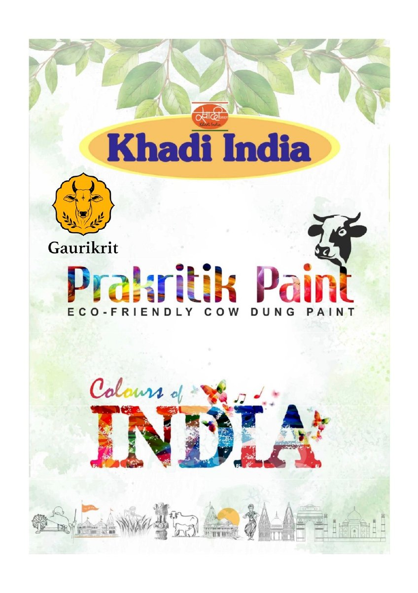

Prakritik Paint brochure.
Browse the supplied Prakritik Paint brochure or download a copy.

Prakritik Paint — product brochure.
The brochure covers both Prakritik Distemper and Prakritik Emulsion: pack sizes, listed specifications, finish, drying time, coverage, V.O.C. and usage. Suitable for architects, builders, institutions and homeowners.
If the file does not open, the PDF may not be reachable from your network. Contact Gaurikrit directly for a current copy.
The current brochure is not yet published here.
Please contact Gaurikrit for a copy of the product brochure.
In the meantime, product specifications for both formats are listed on the Distemper and Emulsion detail pages.